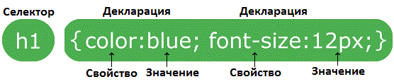

Набір правил CSS складається із селектора та блоку об'яви (декларації):

Селектор вказує на елемент HTML, який ви хочете стилізувати.
Блок об'яв містить одну або кілька об'яв, роздылених крапкою з комою.
Об'ява CSS завжди зікунчується крапкою з комою, а блоки об'яв заключаються у фігурні дужки.
CSS Селектори використовуються для "пошуку" (або вибору) HTML-елементів, які ви хочете стилізувати.
Можно розділити CSS селектори на п'ять категорій:
Селектор еелментів обирає HTML елементи на основі імені елемента
Тут усі елементи <p> на сторінці будуть вирівнянні по центру з червоним кольором тексту:
p {
text-alaign:center;
color:red
}
Селектор id використовує атрибут id HTML елемента для вибору визначеного елемента.
Ідентифікатор (id) елементу є унікальним на сторінці, тому селектор id використовується для вибору одного унікального!
Щоб обрати елемент з визначеним ідентифікатором, напишіть символ хешу (#), а потім id елемента.